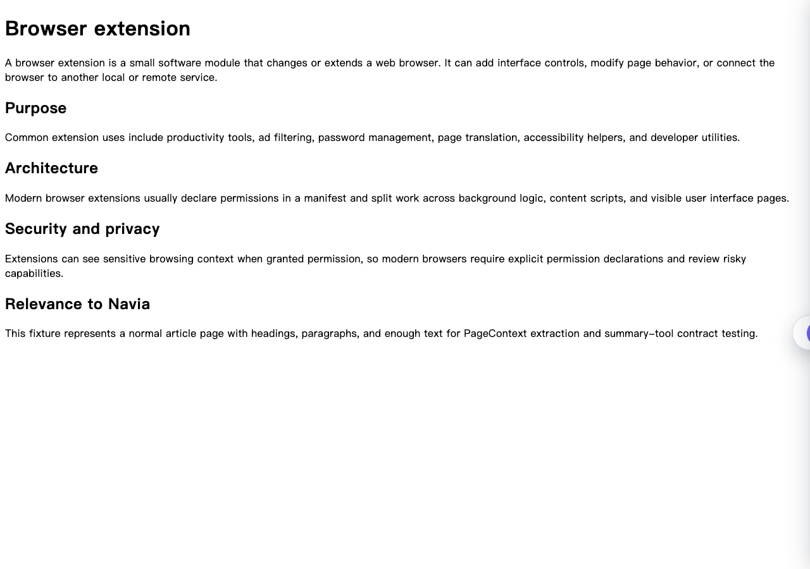
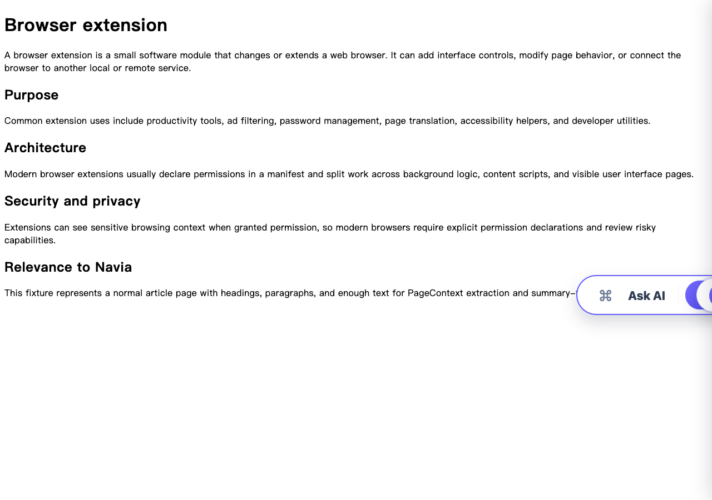
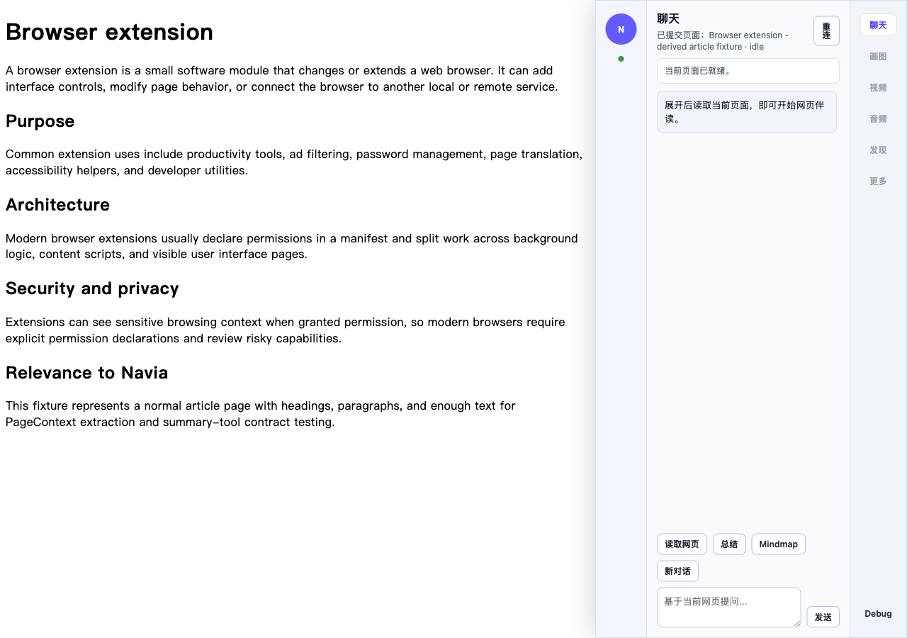
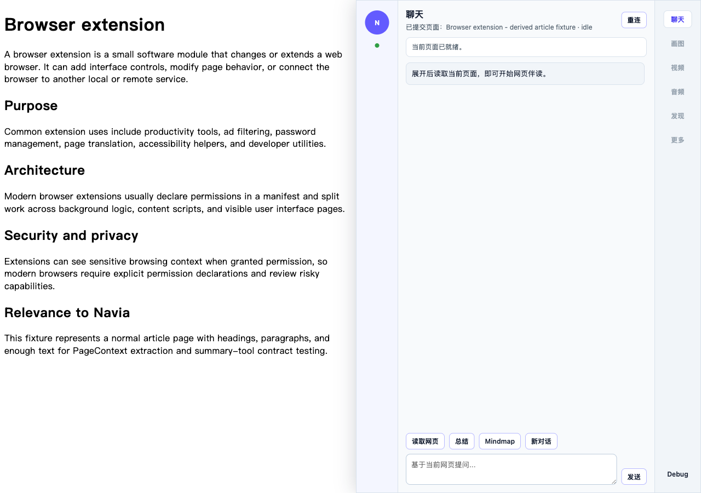
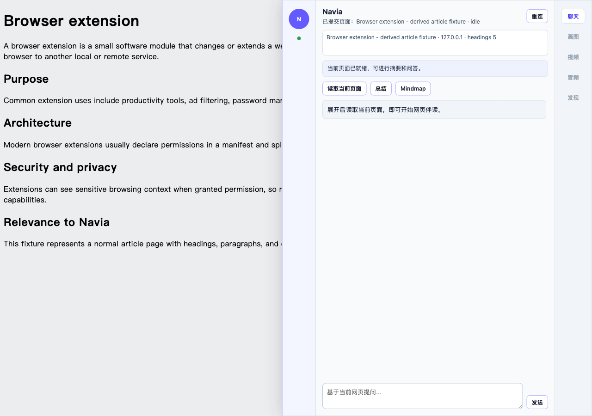
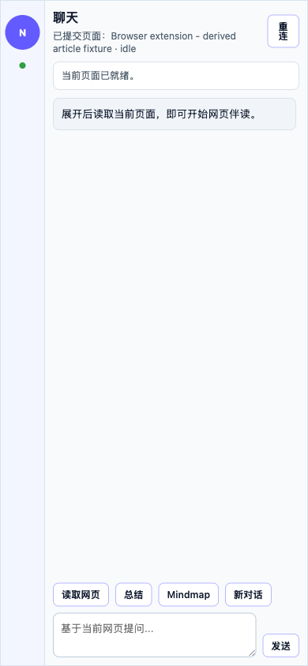
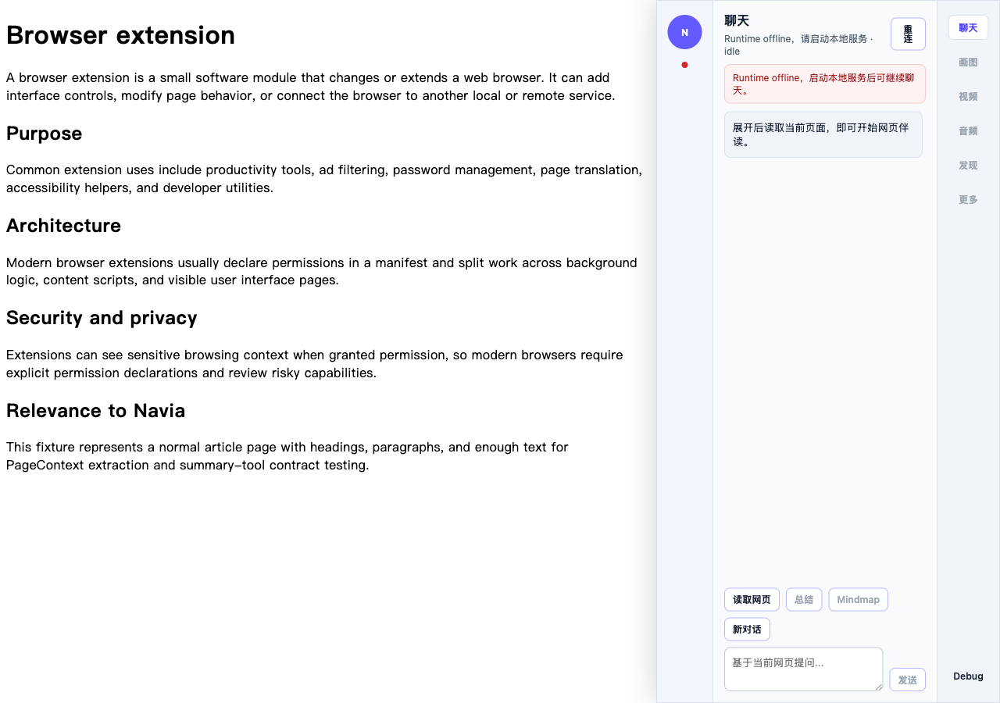

给人的结论
本轮端到端验收显示：用户在普通网页中打开 Navia 悬浮球后，可以进入网页内伴读面板，Runtime 能上线，页面上下文可以提交， 并能完成总结、问答、Mindmap、resize、移动端 overlay、offline 恢复等核心路径。V1.16 的 Evidence Workflow 也已通过 schema 校验、真实 stdio MCP、外部仓库矩阵和 structured blocker 验收。
需要如实说明：本机没有安装 chrome-cli 命令；本报告中的 Chrome 用户视角操作由仓内 Playwright 脚本拉起
headed Chromium 并加载真实 apps/chrome-extension/chrome-mv3-unpacked 扩展完成。headless 路径因为 MV3
service worker 不可见会退回 direct injection，随后被 Runtime CORS 正确拒绝，因此不能作为通过证据。
真实用户场景验收结果
| 场景 | 用户动作 | 结果 | 证据 |
|---|---|---|---|
| 普通网页伴读 | 打开 article fixture，等待右侧悬浮球出现，hover 后打开面板 | 通过 | floating-default / floating-hover / panel-440-push 截图 |
| Runtime 联通 | 面板自动检测 Runtime，创建 session，提交 page context | 通过 | Runtime 日志显示 /v1/health、/v1/sessions、/v1/page/context 200 |
| 网页问答能力 | 点击总结、基于页面提问、Mindmap | 通过 | in-page E2E checks: summary / question / mindmap |
| 布局状态 | 拖拽调整宽度，切换 440px、50vw、overlay 和移动端 overlay | 通过 | panel-440-push / panel-50vw-push / panel-overlay / mobile-overlay 截图 |
| Runtime offline | 关闭 Runtime 后点击重连 | 通过 | runtime-offline 截图 |
| Side Panel 自动化 | 运行 e2e:chrome |
人工确认 | 自动化环境未暴露 extension service worker，脚本返回 MANUAL_REQUIRED |
执行命令与结果
| 命令 | 结果 | 说明 |
|---|---|---|
command -v chrome-cli |
不可用 | 本机未安装 chrome-cli，因此未使用该命令。 |
pnpm --dir apps/chrome-extension run build |
通过 | 生成 apps/chrome-extension/chrome-mv3-unpacked；WXT 仅提示 Mermaid 相关 chunk 较大。 |
PYTHONPATH=services/local-runtime python3 -m pytest ...V1.16... |
25 passed | V1.16 schema、MCP、external E2E 与 V1.13-V1.15 回归。 |
NAVIA_E2E_HEADLESS=false pnpm --dir apps/chrome-extension run e2e:inpage |
通过 | 真实 headed Chromium 加载 unpacked extension 完成用户路径。 |
NAVIA_E2E_HEADLESS=false pnpm --dir apps/chrome-extension run e2e:visual |
通过 | 生成 7 张 UI 状态截图。 |
pnpm --dir apps/chrome-extension run e2e:chrome |
MANUAL_REQUIRED | 自动化环境未暴露 extension service worker；未把 Side Panel 自动化声明为通过。 |
Chrome 用户视角截图证据







V1.16 Evidence Workflow 结果
| 能力 | 结果 | 人类看什么 |
|---|---|---|
| Executable Schema | 通过 | public evidence artifact 在持久化前校验；invalid artifact 不落库。 |
| Real MCP Server | 通过 | python -m navia_runtime.v2.mcp_server 支持 runtime evidence、snapshot diff、workbench、artifact get。 |
| External Repo E2E | 通过 | 4 类本地仓库快照：small Python 通过，3 类非 allowlist 命令生成 accepted structured blocker。 |
外部仓库矩阵： external-repo-matrix.md · external-repo-matrix.json · structured-blockers.json
发现的问题与限制
| 问题 | 等级 | 影响 |
|---|---|---|
本机没有 chrome-cli |
中 | 无法严格按 chrome-cli 命令验收；本轮使用 Playwright headed Chromium 作为等价真实浏览器操作。 |
| headless MV3 扩展不稳定 | 中 | headless 下 service worker 不可见，direct injection 被 CORS 拒绝；必须用 headed 模式作为真实验收。 |
| Side Panel 自动化未通过 | 中 | e2e:chrome 返回 MANUAL_REQUIRED；需要人工加载扩展确认 Side Panel。 |
| 构建存在大 chunk 警告 | 低 | Mermaid 相关 chunk 较大，不影响当前验收，但后续应考虑 code splitting。 |
最终判断
V1.16 后端 Evidence Workflow：通过 Chrome in-page 用户路径：通过 Side Panel 自动化：需要人工确认
这份报告是面向人类评审的证据页，重点帮助快速判断：开发内容是否真实运行、用户路径是否可见、哪些结果是通过、哪些仍受自动化环境限制。